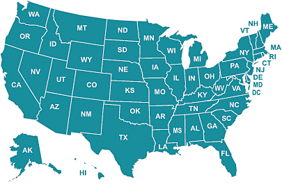

Family Caregivers

Family Caregivers – 1 in 5 Americans?
Yes, over 65.7 million Americans are unpaid family caregivers of an adult or child.
- The majority are female, with an average age of 48 years.
- Of the 86% of family caregivers that care for a relative:
- 33% care for a parent
- 34% care for 2 or more people
- 1 in 7 care for their own child
Important: If you're a family caregiver, you're not alone, and there are RESOURCES for you!
Companion Arts offers select, acclaimed CDs and books for all caregivers, and we also highly recommend the following resource: The Family Caregiver Alliance has listings of available resources in YOUR community – just go to their site and click your location on its US map (similar to the graphic below).
The Family Caregiver Alliance also has excellent, comprehensive resources – people, services and information – on 6 specific topics: Preparing for Caregiving; New To Caregiving; Daily or In-Home Caregiving; Long Distance Caregiving; Caregiving With Advanced Illness; Post Caregiving.
In upcoming months Companion Arts will be producing our monthly NewsFlash, which will contain the very latest caregiver resources. You can sign up for your free NewsFlash below (scroll down); we look forward to providing you with the latest caregiver resources!